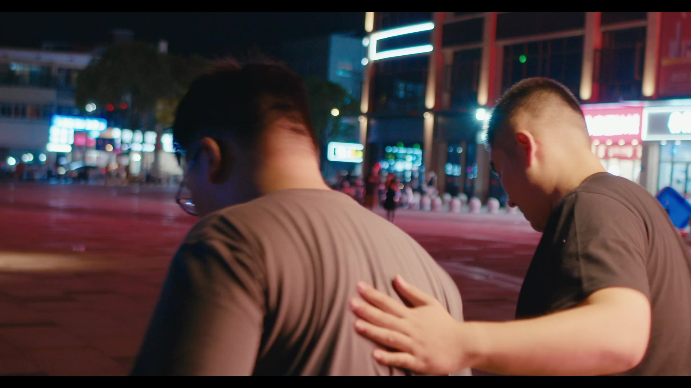
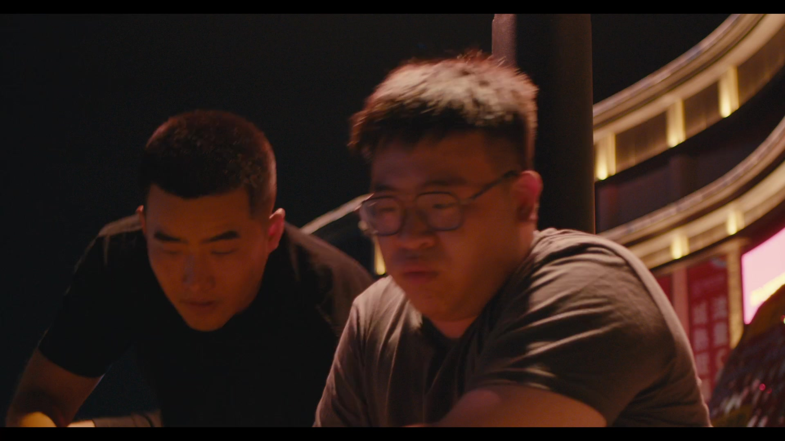
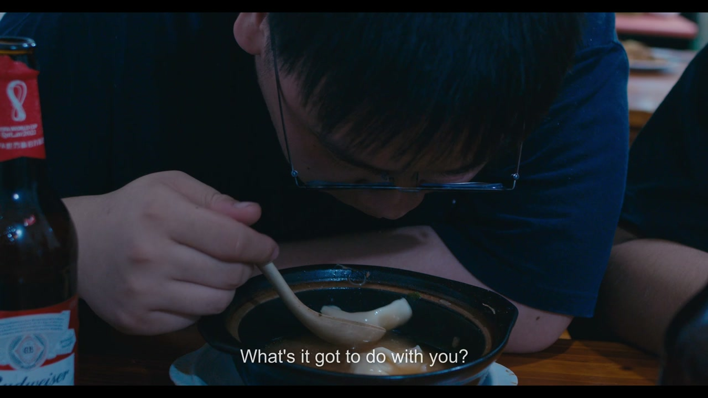

让「一转」「一涂」跟着手势出现。

短视频代表作
可接远程兼职
把回测条件逐项放进提问卡，再用时间尺交代跨度。
更多作品
美妆口播 · 包装练习
OLAY 母女护肤口播
同一组母女口播素材，分别复刻参考样式和自制包装，用人物窗口和花字突出对话重点。
两版均非品牌委托。
服装展示 · 素材剪辑练习
肌理翻领外套
先看面料和领型，再看不同配色，最后用字幕给出选码提示。
非品牌委托。
家庭教育 · 素材剪辑练习
别让孩子一个人承担
围绕“孩子考砸了，家长怎么陪”整理口播，把讲者给出的做法标在字幕里。
原创剧情短片 · 2022.07–2022.11
罅隙 G A P
一位父亲发现了儿子与另一位男性的关系。剪辑里，我用动作衔接、反应镜头和画外声，表现人物之间的距离。
我负责编剧、导演，用 DaVinci Resolve 独立完成全片剪辑、调色和声音后期，并校对英文字幕。摄影与现场录音由团队成员负责。
05:36:16 正片剪点 · 24 帧/秒
我在人物起身时切换角度，让动作接着走，也让观众看清另一个人扶在他背上的手。
展开看剪点前后与餐厅反应镜头


关于我
卞泺滔
我目前从事纺织外贸，可承接口播、访谈、商品展示和剧情短视频的兼职剪辑与基础后期。
我用 DaVinci Resolve 剪辑、调色和处理声音，也做英文字幕校对。复查成片时，我会按时间码标记需要调整的剪口、画面、声音和字幕。
看《罅隙》里的一个剪点学习经历
- 2024.09–2025.09
- 英国埃塞克斯大学修读电影相关课程，未获学位。
- 2023.09–2024.09
- Kaplan 国际学院伦敦校区完成本科预科课程。
语言普通话母语 · 英语 B2（雅思 6.0）